Seu assistente de código esquece tudo entre uma sessão e outra. Esta estrutura dá a ele memória de longo prazo, um time de agentes que se especializam sozinhos e um loop que roda automaticamente.

Você explica a arquitetura do projeto, o assistente resolve a tarefa — e na sessão seguinte ele começa do zero. O contexto vive na janela da conversa, não em disco. Toda decisão explicada, toda armadilha descoberta e todo padrão combinado evaporam quando a sessão fecha.
| Sem memória | Com o claude-mind |
|---|---|
| Você reexplica a arquitetura toda sessão | Ele abre a sessão já sabendo o que foi decidido e por quê |
| A mesma armadilha se repete meses depois | A armadilha virou um fato registrado, lido antes de agir |
| "Faz aí" vira improviso | A ação vai ao agente dono dela — e se não existe, ele é criado antes |
| O aprendizado depende de você lembrar de anotar | Três hooks fazem o loop rodar sozinho |
De dentro da pasta do seu projeto, um comando:
npx @flaviolimadev/claude-mind@latest .
Ou, sem npm, direto do clone:
git clone https://github.com/flaviolimadev/claude-mind.git cd claude-mind node scripts/install.mjs /caminho/do/seu/projeto
Não sobrescreve nada: pula arquivos existentes e funde o settings.json que você
já tiver. Node ≥18, zero dependências.
Um arquivo markdown por fato, indexado. É o que sobrevive entre sessões.
Um dono por domínio, com função única, regras próprias e a memória que ele lê.
A porta de entrada: decompõe o pedido em ações e acha o dono de cada uma.
Carregam a memória ao abrir, impõem o protocolo a cada mensagem e barram o encerramento com desvio.
Cruza catálogo, agentes e memória e aponta o que saiu de sincronia. Só lê.
Abre no navegador e mostra a "mente" crescer enquanto você trabalha.
Existe um agente dono de revisão. Chega um pedido de revisão de acessibilidade. O dispatcher procura um especialista nisso e, se não houver, manda criar antes de revisar. O time cresce exatamente onde o trabalho aparece — e cada agente vira especialista de um recorte estreito, com regra própria e resultado previsível.
Há um critério explícito para não criar: recorte usado uma vez só e sem regra própria é parâmetro, não agente. Sem esse freio a estrutura incha de agentes vazios.
Instalando esta estrutura no seu projeto. A memória vira arquivos markdown versionados e o hook de abertura os carrega sozinho no começo de cada sessão.
Porque o contexto vive na janela da conversa, não em disco. O que não estiver em arquivo se perde.
Não, complementa: o CLAUDE.md diz como trabalhar aqui; a memória guarda
o que já foi aprendido, um fato por arquivo, com dono e verificação.
Sim — nasceu num projeto de produção de vídeo, onde os domínios eram roteiro, geração e montagem.
Persistent memory and self-specializing agents for Claude Code. Your AI coding assistant loses context between sessions: you explain the codebase, it delivers, and tomorrow it starts from zero. claude-mind gives it long-term memory (one fact per file, indexed and versioned), a team of domain agents and sub-agents that are created on demand when a new kind of work appears, an automatic loop wired through Claude Code hooks, a consistency checker and a live graph. Zero dependencies, pure Node, works in any project and any language.